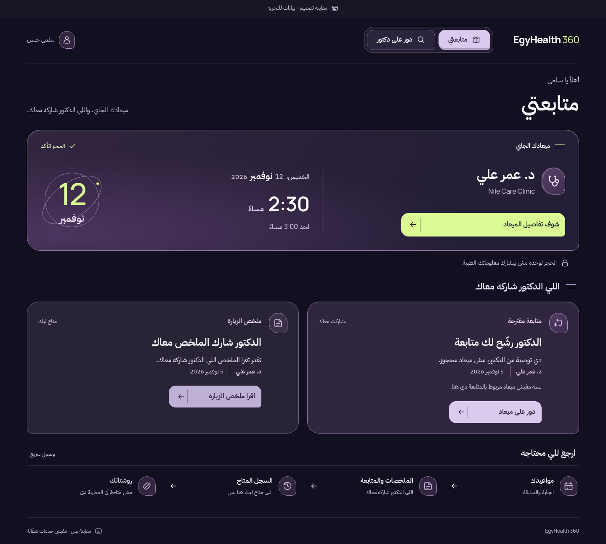
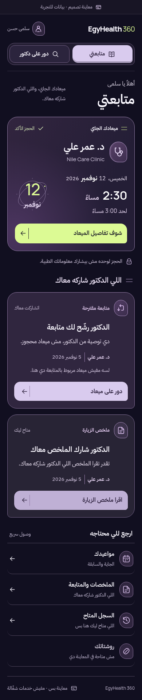

Prior NOVA · purple / lime
All-dark field, orbital date, two framed source cards.

Unified EgyHealth 360 · proposed
Selected mark, dark care anchor, connected light sources, functional date.

Prior · Arabic mobile

Unified · Arabic mobile